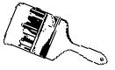

ABOVE FROM LEFT: Hang your bucket on the side of the ladder nearest your paintin' arm for easiest access. A wide grasp on the rungs provides the most controlled lift. Brace the lower rung on your thigh for best leverage and you'll be able to ease your ladder up against the house.